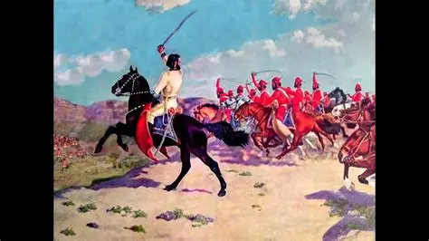

¿Cuál fue su legado?
Su legado es el del patriotismo silencioso. Enseñó que la Independencia no la hicieron solo los soldados, sino también las mujeres que cosieron banderas, donaron joyas y sostuvieron a sus familias.

¿Dónde la recordamos?
- La ciudad de Remedios de Escalada en Buenos Aires lleva su nombre.
- Más de 100 escuelas en todo el país.
- Calles, plazas y hospitales.
